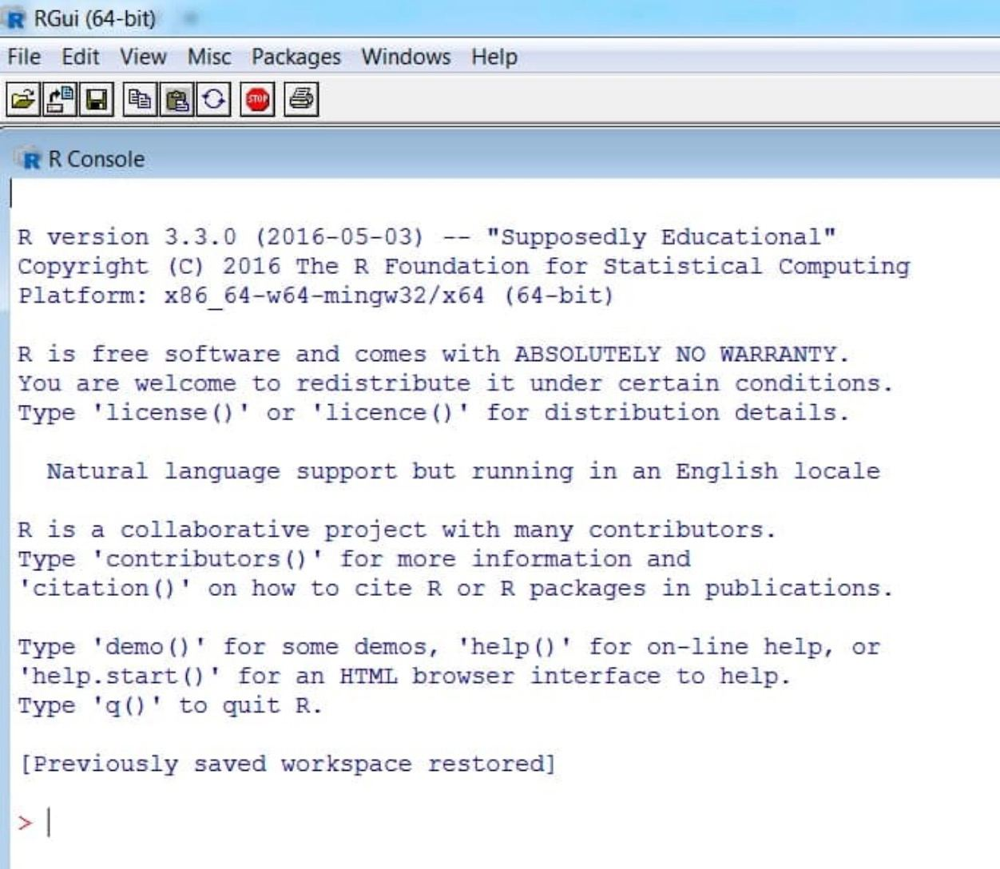
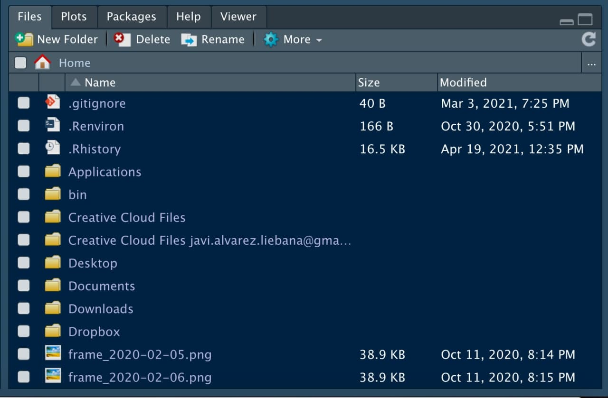
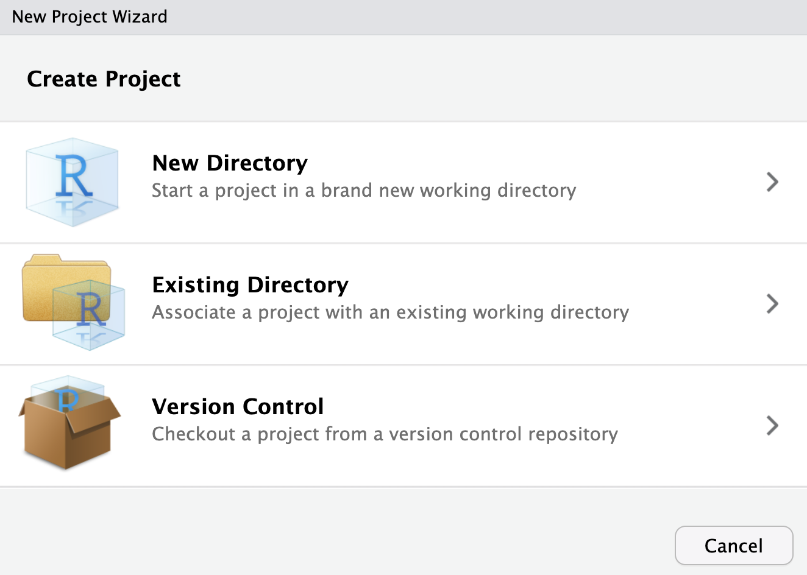
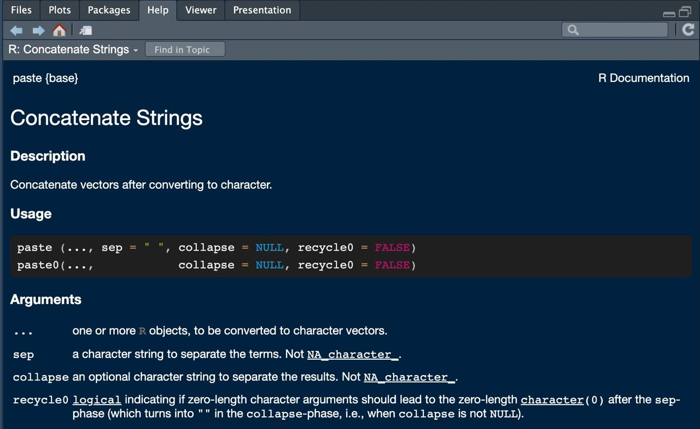
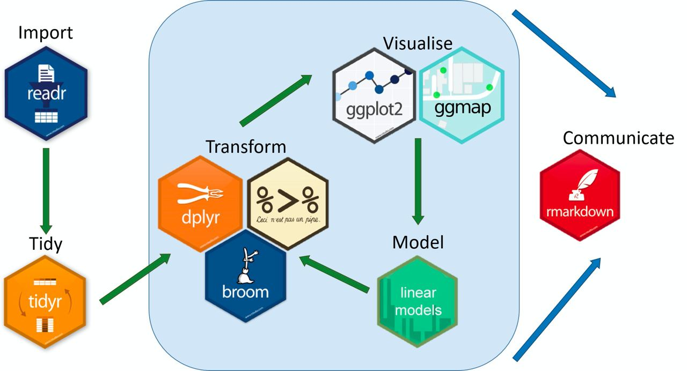

In the slide menu (bottom left) you have an option to download them in pdf under Tools (tip: do not do this until the end of the course as they will be modified).
Step 2: for Mac just click on the .pkg file, and open it once downloaded. For Windows systems, click on install R for the first time and then on Download R for Windows. Once downloaded, open it like any other installation file.
Step 3: open the installation executable.
Warning
Whenever you download something from CRAN (either R itself or a package), make sure you have an internet connection.
First steps
To check that it has been installed correctly, after opening R, you should see a white screen similar to this one.
That “white screen” is called console and we can make a first use of it as a calculator.

Idea: let us define a variable called a, and it will be assigned the value 1 (type the code below in the console and hit “enter”).
a <-1
First steps
To check that it has been installed correctly, after opening R, you should see a white screen similar to this one.
That “white screen” is called console and we can make a first use of it as a calculator.
Idea: we will define another variable called b and assign it the value 2.
a <-1b <-2
Note that…
In R we use <- as an arrow: the variable to the left of the arrow is assigned the value to the right (e.g. a <- 1).
First steps
To check that it has been installed correctly, after opening R, you should see a white screen similar to this one.
That “white screen” is called console and we can make a first use of it as a calculator.
Idea: we will do the sum a + b and it will return its result.
a <-1b <-2a + b
[1] 3
Installing R Studio
RStudio will be the Word that we will use to write (what is known as an IDE: integrated development environment).
Step 2: select the executable that appears according to your operating system.
Step 3: after downloading the executable, open it like any other executable and let the installation finish.
Pane layout in RStudio
When you open RStudio you will probably have three windows:
Console: this is the name to call the big window that takes up a good part of your screen. Try writing the same code as before (the sum of the variables) in it. The console will be where we will execute commands and show results.
Pane layout in RStudio
When you open RStudio you will probably have three windows:
Environment: the small screen (you can adjust the margins) located at the upper right part. It will show us the variables we have defined.
Pane layout in RStudio
When you open RStudio you will probably have three windows:
Multi-purpose panel: the window at the bottom right will not only be used to search for function help, but also to view graphics.

Why R?
Why R?
R is the main statistical language, created by and for statisticians, with 5 fundamental advantages over Excel:
Free of charge: the philosophy of the R community is code sharing under copyleft → ethical use of public money
Open source: not only is it free but it allows free access to other people’s code, even to own source code → flexibility and transparency
Modular language: there are other people’s code that we can reuse (almost 20 000 packages) → time-saving
High-level language
Why R?
Why programming?
Automate → it will allow you to automate recurring tasks.
Replicability → you will be able to replicate your analysis always in the same way.
Flexibility → you will be able to adapt the software to your needs.
Transparency → it could be audited by the community.
Main idea: packages
One of the key ideas of R is the use of packages: codes that other people have implemented to solve a problem.
Installing: download the codes from the web (internet required) → “buy a book”, only once (per computer)
install.packages("ggplot2")
Loading: after downloading the package, we indicate which packages we want to use each time we open RStudio → bring the book off the shelf
library(ggplot2)
Main idea: packages
Once installed, there are two ways to use a package (bring it off the shelf)
The whole package: with library(), using the package name without quotes, we load into our session the whole book.
library(ggplot2)
Some particular functions using package::function we indicate that we only want a concrete page of that book.
ggplot2::geom_point()
You will be wrong
During your learning process, it is going to be very common that things don’t go right the first time → you will make mistakes. Not only will it be important to assume this, but it is important to read the error messages to learn from them.
Error messages: preceded by “Error in…” and will be those failures that prevent execution.
"a"+1
Error in "a" + 1: non-numeric argument to binary operator
Warning messages: preceded by “Warning in…” are the most sensitive (possible) failures since they are inconsistencies that do not prevent execution.
# Code is ok but the result provided a NaN value, **Not A Number**, a value that is not a (real) numbersqrt(-1)
Warning in sqrt(-1): NaNs produced
[1] NaN
Scripts (.R files)
A script will be the document in which we program, our .doc file (here with .R extension) where we will write the commands. To open our first script, click in the menu on File < New File < R Script.
Be careful
It is important not to overuse the console: everything you do not write in a script, when you close, you will have lost it.
Executing the first script
Now we have a fourth window: the window where we write our codes. How to run it?
We write the code to execute.
Save the .R file by clicking on Save current document.
The code is not executed unless we tell it to do so. We have three options:
Copy and paste into console.
Select lines and Ctrl+Enter.
Enable Source on save to the right of save: it not only saves but executes the whole code.
💻 Your turn
Execute your first script: create a script from scratch, program as indicated below and execute it (in the 3 possible ways)
📝 Define a variable named a and whose value is -1.
Código
a <--1
📝 Add below another line to define a variable b with value 5. Then multiply both variables.
Código
b <-5a * b # no savedmult <- a * b # saved
📝 Modify the code below to define two variables c and d, with values 3 and -1. Then split the variables.
c <-# you should assign the value 3d <-# you should assign the value -1
Código
c <-3d <--1c / d # no saveddiv <- c / d # saved
📝 Assign a positive value to x and calculate its square root; assign another negative y and calculate its absolute value with the abs() function.
Código
x <-5sqrt(x)y <--2abs(y)
📝 Using the variable x already defined, complete/modify the code below to store in a new variable z the result stored in x minus 5.
z <- ? - ? # complete the codez
Código
z <- x -5z
Note that…
Functions assqrt(), abs() or max() are what we call functions: lines of code that we have “encapsulated” under a name, and given some input arguments, execute the commands (a kind of shortcut).
Be organized: projects
In the same way that on the computer we usually work ordered by folders, in RStudio we can do the same to work in efficient way by creating projects.
A project will be a “folder” inside RStudio, so our working directory will automatically be the project folder itself (you can switch from one project to another with the top right menu).
We can create one in a new folder or in an existing folder.

From the VALUE to the DATABASE
What data type can we have in each cell of a database?
Cell (single value): single data of a specific type.
Variable: concatenation of values of the same type (vectors).
Matrix: concatenation of variables of same type and length.
Data table: concatenation of variables of different type but equal length.
List: concatenation of variables of different type and different length
Type of (single) data
Are there variables beyond numbers?
Let us think, for example, of a person’s stored data:
The age or weight will be a numeric variable.
age <-33
Its name will be a string of text (string or char).
name <-"javi"
To the question “Are you single?”, the answer will be what we call as a logical variable (TRUE if you are single or FALSE otherwise).
single <-TRUE
Your date of birth will be just that, a date.
Numeric variables
The simplest data (we have already used it) will be the numeric variables
a <-5b <-2a + b
To know the type of a variable we have the function class().
class(a)
[1] "numeric"
With numeric variables we can perform the arithmetic operations of a calculator: addition (+), square root (sqrt()), square (^2), etc.
a^2
[1] 25
abs(a)
[1] 5
String variables
Let us imagine that, in addition to the age of a person, we want to store his/her name: now the variable will be of type character.
name <-"Javier"class(name)
[1] "character"
Strings variables are a type with which we obviously cannot perform arithmetic operations (other operations such as pasting or locating patterns can be performed).
name +1
Error in name + 1: non-numeric argument to binary operator
Note that…
String variables are ALWAYS in quotes: TRUE (logical, binary value) is not the same as "TRUE" (char or string).
First function: paste
In R we denote as function a piece of encapsulated code under a name, and which depends on some input arguments. Our first function will be paste(): given two strings, it allows us to paste them together.
paste("Javier", "Álvarez")
[1] "Javier Álvarez"
Note that default pastes strings with a space, but we can add an optional argument to tell it the separator (in sep = ...).
paste("Javier", "Álvarez", sep ="*")
[1] "Javier*Álvarez"
First function: paste

How to know what arguments a function needs? By typing ? paste in the console, you will get a help in the multi-purpose panel.
In this help panel, you will see in its header what arguments the function already has default assigned to it.
There is a similar function named as paste0() that pastes by default with sep = "" (without anything else).
paste0("Javier", "Álvarez")
[1] "JavierÁlvarez"
First package: glue
A more intuitive way to work with string variables is to use the {glue} package: the first thing to do is to “buy the book” (if we have never done it before). After that load the package
install.packages("glue")library(glue)
This package allows us to use variables inside strings. For example, “I am … years old”, where the age is stored in a variable.
age <-33glue("I am {age} years old")
I am 33 years old
Inside brackets we can also execute operations
units <-"days"glue("I am {age * 365} {units} old")
I am 12045 days old
Logical conditions
Another fundamental type will be the logical or binary or boolean variables (just two values):
TRUE: true stored internally as a 1.
FALSE: false stored internally as a 0.
single <-TRUE# Are you single? --> YESclass(single)
[1] "logical"
It can take a third value, NA or missing data, the acronym for not available.
Important
Logical variables NOT string variables: "TRUE" is a string, TRUE is a logical value.
TRUE+1
[1] 2
"TRUE"+1
Error in "TRUE" + 1: non-numeric argument to binary operator
Logical conditions
Logical values are usually the result of evaluate logical conditions. For example, let us imagine we want to check if my name is Javi.
name <-"María"
The logical operator== allow us to ask if left equals right.
name =="Javi"
[1] FALSE
With its opposite != we ask if it is different.
name !="Javi"
[1] TRUE
Note that…
It is not the same <- (assignment) as == (we are asking, it is a logical comparison).
Logical conditions
In addition to “equal to” versus “different” comparisons, also order comparisons such as <, <=, > or >=.
Is the person less than 32 years old?
age <-38age <32
[1] FALSE
Age is greater than or equal to 38 years old?
age >=38
[1] TRUE
Date variables
A very special data type: the date type data.
date_char <-"2021-04-21"
It looks like a simple string but represents an instant in time. What should happen if we add a 1 to a date?
date_char +1
Error in date_char + 1: non-numeric argument to binary operator
Dates cannot be string variables: we must convert string variables to date with as_date() from the {lubridate} package.
📝 Define a variable that stores your age (named as age) and another with your name (named as name).
Código
age <-33name <-"Javi"
📝 Define another variable named as siblings that answers the question “do you have siblings?” and another one with the date of your birth (named as birth_date).
📝 Define another variable with your last names (named as surnames) and use glue() to have a single variable full_name (separating first and last name by a comma).
📝 Compute the days that have passed from the date of your birth until today (with the date of birth defined in exercise 2).
Código
today() - birth_date
Vectors: concatenate
Working with data usually implies having columns that represent variables: we will call vectors a concatenation of cells (values) of the same type.
The simplest way is using the c() command (c, concatenate), and just introduce its elements between parentheses, and separated by commas.
age <-c(33, 27, 60, 61)age
[1] 33 27 60 61
Tip
A single number x <- 1 (or x <- c(1)) is actually a vector of length one.
Vectors: concatenate
As you can see, in the environment area we have now a collection of elements saved
age
[1] 33 27 60 61
The length of a vector can be computed with length().
length(age)
[1] 4
We can also concatenate vectors themselves
c(age, age, 8)
[1] 33 27 60 61 33 27 60 61 8
Numerical sequences
Many times we will want to create numeric sequences (for example, the days of the month). The seq(start, end) command allows us to create a sequence from a start element to an end element, advance one at a time.
The command 1:n returns the same as seq(1, n) (if the initial element is greater than the final one, it will understand that the sequence is decreasing).
1:5
[1] 1 2 3 4 5
7:-3
[1] 7 6 5 4 3 2 1 0 -1 -2 -3
Numerical sequences
We can also define other type of discretization step between consecutives
We may even want to generate a vector of n repeated elements.
rep(0, 7)
[1] 0 0 0 0 0 0 0
Vectors: characters
A vector is a concatenation of same type elements, but they do not necessarily have to be numerical types. Let us create an example sentence.
sentence <-"I am Javi"sentence
[1] "I am Javi"
length(sentence)
[1] 1
In the previous case it was not a vector, it was a single text element. To create a vector we must use c() again and separate elements with commas.
vector <-c("I", "am", "Javi")vector
[1] "I" "am" "Javi"
length(vector)
[1] 3
Vectors
What will happen if we concatenate elements of different type?
c(1, 2, "javi", "3", TRUE)
[1] "1" "2" "javi" "3" "TRUE"
Notice that since they are all of the same type, what R does is convert everything to character, violating data integrity
c(3, 4, TRUE, FALSE)
[1] 3 4 1 0
It is important to understand that the logical values are actually stored internally as 0/1
Operating with vectors
With numeric vectors we can do the same arithmetic operations as with numbers → a number is a vector (of length one).
What will happen if we add or subtract a value to a vector?
x <-c(1, 3, 5, 7)x +1
[1] 2 4 6 8
x *2
[1] 2 6 10 14
Be careful
Unless we indicate otherwise, in R operations with vectors are always element to element
Operating with vectors
Vectors can also interact with each other, so we can define, for example, sums of vectors (element by element)
x <-c(2, 4, 6)y <-c(1, 3, 5)x + y
[1] 3 7 11
Since the operation (e.g., a sum) is performed element by element, what will happen if let’s add two vectors of different length?
z <-c(1, 3, 5, 7)x + z
[1] 3 7 11 9
What it does is recycle elements: if you have a vector of 4 elements and we add another one of 3 elements, it will recycle from the vector with smaller length.
Operating with vectors
A very common operation is to ask data by using logical conditions. For example, if we define a vector of temperatures….
What days was it less than 22 degrees
x <-c(15, 20, 31, 27, 15, 29)
x <22
[1] TRUE TRUE FALSE FALSE TRUE FALSE
It will return a logical vector, depending on whether each element fulfills or not the requested condition (of equal length to the requested vector).
If we had a missing data (e.g., due to device error that day), the evaluated condition would also be NA.
y <-c(15, 20, NA, 31, 27, 7, 29, 10)y <22
[1] TRUE TRUE NA FALSE FALSE TRUE FALSE TRUE
Operating with vectors
Logical conditions can be combined in two ways:
Intersection: all concatenated conditions must be checked (conjunction and with &) to return a TRUE.
x <30& x >15
[1] FALSE TRUE FALSE TRUE FALSE TRUE
Union: it is sufficient that at least one is fulfilled (conjunction or with |).
x <30| x >15
[1] TRUE TRUE TRUE TRUE TRUE TRUE
any() and all() allow us to check that all (or any) elements meet the following criteria
any(x <30)
[1] TRUE
all(x <30)
[1] FALSE
Operating with vectors
We can also use statistical operations such as sum() which, given a vector, returns the sum of all its elements.
x <-c(1, -2, 3, -1)sum(x)
[1] 1
What happens when a single value is missing?
x <-c(1, -2, 3, NA, -1)sum(x)
[1] NA
By default, if we have a missing data, the operation will also be missing. In order to remove that data, we use an optional argument na.rm = TRUE.
sum(x, na.rm =TRUE)
[1] 1
Operating with vectors
As we have mentioned, logical values are stored internally as 0 and 1, so we can use them in arithmetic operations.
For example, if we want to find the number of elements that fulfill a condition (for example, “less than 3”), those that do will be assigned a 1 (TRUE) and those that don’t a 0 (FALSE), so we only need to add this logical vector to obtain the number of elements that fulfill a condition.
x <-c(2, 4, 6)sum(x <3)
[1] 1
Operating with vectors
Other common operations are average, median, percentiles, etc.
Average (mean): centrality measure that consists of adding all the elements and dividing by the number of elements added. The best known but the least robust: given a set, if outliers (very large or very small values) are introduced, the mean is strongly perturbed.
Other common operations are average, median, percentiles, etc.
Median: measure of centrality that consists of ordering the elements and keeping the one that occupies the middle.
x <-c(165, 170, 181, 191, 150, 155, 167, 173, 177)median(x)
[1] 170
Percentiles: measures of location (they divide the data into equal parts).
quantile(x) # por defecto percentiles 0-25-50-75-100
0% 25% 50% 75% 100%
150 165 170 177 191
quantile(x, probs =c(0.1, 0.4, 0.9))
10% 40% 90%
154.0 167.6 183.0
Operating with vectors
Another very common operation is to access elements of it. The simplest way is to use the [i] operator (access the i-th element).
age <-c(20, 30, 33, NA, 61) age[3] # third position
[1] 33
Since a number is just a vector of length one, this operation can also be applied using a vector of indexes to select
y <-c("Hi", "how", "are", "you", "?")y[c(1:2, 4)] # first, second and fourth elemento
[1] "Hi" "how" "you"
Tip
To access the last one, without worrying about which one, we can pass as index the length x[length(x)].
Operating with vectors
Other times we will not want to select but delete some elements. We will have to repeat the same operation but with the sign - in front: the operator [-i] does not select the i-th element of the vector but discards it.
y
[1] "Hi" "how" "are" "you" "?"
y[-2]
[1] "Hi" "are" "you" "?"
Many times we will want to select or eliminate based on logical conditions, depending on the values, so we will pass as index the condition itself (remember, x < 2 returns a logical vector).
📝 Define the vector x as the concatenation of the first 5 odd numbers, and calculate their sum.
Código
# Two waysx <-c(1, 3, 5, 7, 9)x <-seq(1, 9, by =2)sum(x)
📝 Get the elements of x greater than 4. Calculate the number of elements of x greater than 4.
Código
x[x >4]sum(x >4)
📝 Calculate the vector 1/x and obtain the ordered version (from smallest to largest).
Código
z <-1/xsort(z)z[order(z)]
📝 Find the maximum and minimum of vector x.
Código
min(x)max(x)
📝 Find of the vector x the elements greater (strictly) than 1 and less (strictly) than 7. Find a way to find out if all the elements are positive or not.
Código
x[x >1& x <7]all(x >0)
📝 Given the vector x <- c(1, -5, 8, NA, 10, -3, 9), extract the elements that occupy the places 1, 2, 5, 6. Removes from the vector the second element. After removing it, compute its sum and mean
In the {datasets} package we have several datasets, and one of them is named as airquality. I have extracted below 3 variables from this dataset
temperature <- airquality$Tempmonth <- airquality$Monthday <- airquality$Day
What represents the data? How to find out?
How many records do we have for May? What about April? Construct a new date variable with the date of each record (combining year, month and day).
Create a new variable temp_celsius with the temperature in ºC (units of the original variable are in Fahrenheit)
What was the average temperature for the month of August? Extract the days when the temperature exceeded 30 degrees and determine the number of days when it did.
Lesson 2: first databases
First databases: tibbles as standard type for databases. R base vs tidyverse. Pipe operator. Principles of tidy data: tidy vs messy data. Pivoting datasets
Primer intento: matrices
Cuando analizamos datos solemos tener varias variables de cada individuo: necesitamos una «tabla» que las recopile. La opción más inmediata son las matrices: concatenación de variables del mismo tipo e igual longitud.
Imagina que tenemos estaturas y pesos de 4 personas. ¿Cómo crear un dataset con las dos variables?
Con cbind()concatenamos vectores en forma de columnas
Dado que ahora tenemos dos dimensiones, para acceder a elementos deberemos proporcionar el índice de la fila y de la columna (si quedan libres implica todos de esa dimensión)
datos_matriz[2, 1]
estaturas
160
datos_matriz[, 2]
[1] 63 70 85 95
Primer intento: matrices
También podemos definir una matriz a partir de un vector numérico, reorganizando los valores en forma de matriz (sabiendo que los elementos se van colocando por columnas).
📝 Define la matriz x <- matrix(1:12, nrow = 4). Obtén la primera fila, la tercera columna, y el elemento (4, 1).
Código
x <-matrix(1:12, nrow =4)x[1, ] # primera filax[, 3] # tercera columnax[4, 1] # elemento (4, 1)
📝 Con la matriz anterior definida como x <- matrix(1:12, nrow = 4), calcula la media de todos los elementos, la media de cada fila y la media de cada columna. Calcula la suma de de cada fila y de cada columna
Código
x <-matrix(1:12, nrow =4)mean(x) # de todosapply(x, MARGIN =1, FUN ="mean") # media por filasapply(x, MARGIN =2, FUN ="mean") # media por columnasapply(x, MARGIN =1, FUN ="sum") # suma por filasapply(x, MARGIN =2, FUN ="sum") # suma por columnas
Segundo intento: data.frame
Las matrices tienen el mismo problema que los vectores: si juntamos datos de distinto tipo, se perturba la integridad del dato ya que los convierte
edades soltero nombres
[1,] "14" "TRUE" "javi"
[2,] "24" NA "laura"
[3,] NA "FALSE" "lucía"
Al ya no ser números no podemos realizar operaciones aritméticas
matriz +1
Error in matriz + 1: non-numeric argument to binary operator
Segundo intento: data.frame
Para poder trabajar con variables de distinto tipo tenemos lo que se conoce como data.frame: concatenación de variables de igual longitud pero pueden ser de tipo distinto.
tabla <-data.frame(edades, soltero, nombres)class(tabla)
[1] "data.frame"
tabla
edades soltero nombres
1 14 TRUE javi
2 24 NA laura
3 NA FALSE lucía
Segundo intento: data.frame
Dado que un data.frame es ya una «base de datos» las variables no son meros vectores matemáticos: tienen un significado y podemos (debemos) ponerles nombres
edad estado nombre f_nacimiento
1 14 TRUE javi 1989-09-10
2 24 NA laura 1992-04-01
3 NA FALSE lucía 1980-11-27
Segundo intento: data.frame
¡TENEMOS NUESTRO PRIMER CONJUNTO DE DATOS! Puedes visualizarlo escribiendo su nombre en consola o con View(tabla)
Segundo intento: data.frame
Si queremos acceder a sus elementos, podemos como en las matrices (aunque no es recomendable): ahora tenemos dos índices (filas y columnas, dejando libre la que no usemos)
tabla[2, ] # segunda fila (todas sus variables)
edad estado nombre f_nacimiento
2 24 NA laura 1992-04-01
tabla[, 3] # tercera columna (de todos los individuos)
[1] "javi" "laura" "lucía"
tabla[2, 1] # primera característica de la segunda persona
[1] 24
También tiene ventajas de una «base» de datos : podemos aceder a las variables por su nombre (recomendable ya que las variables pueden cambiar de posición), poniendo el nombre de la tabla seguido del símbolo $ (con el tabulador, nos aparecerá un menú de columnas a elegir)
Segundo intento: data.frame
names(): nos muestra los nombres de las variables
names(tabla)
[1] "edad" "estado" "nombre" "f_nacimiento"
dim(): nos muestra las dimensiones (también nrow() y ncol())
dim(tabla)
[1] 3 4
Podemos acceder a las variables por su nombre
tabla[c(1, 3), "nombre"]
[1] "javi" "lucía"
Segundo intento: data.frame
Si tenemos uno ya creado y queremos añadir una columna es tan simple como usar la función data.frame() que ya hemos visto para concatenar la columna. Vamos añadir por ejemplo una nueva variable, el número de hermanos de cada individuo.
# Añadimos una nueva columna con nº de hermanos/ashermanos <-c(0, 2, 3)tabla <-data.frame(tabla, "n_hermanos"= hermanos)tabla
edad estado nombre f_nacimiento n_hermanos
1 14 TRUE javi 1989-09-10 0
2 24 NA laura 1992-04-01 2
3 NA FALSE lucía 1980-11-27 3
Clase 3: primeras bases de datos. R base vs Tidyverse
Nuestra base de datos: tibble. Tidydata: un multiverso de datos limpios
Intento final: tibble
Las tablas en formato data.frame tienen algunas limitaciones
La principal es que no permite la recursividad: imagina que definimos una base de datos con estaturas y pesos, y queremos una tercera variable con el IMC
📝 Carga del paquete {datasets} el conjunto de datos airquality (variables de la calidad del aire de Nueva York desde mayo hasta septiembre de 1973). ¿Es el conjunto de datos airquality de tipo tibble? En caso negativo, conviértelo a tibble (busca en la documentación del paquete en https://tibble.tidyverse.org/index.html).
📝 Una vez convertido a tibble obtén el nombre de las variables y las dimensiones del conjunto de datos. ¿Cuántas variables hay? ¿Cuántos días se han medido?
Cada celda puede ser de un tipo diverso: números, texto, fechas, valores lógicos, etc
Un vector es una concatenación de celdas (las futuras columnas de nuestras tablas) –> En R por defecto las operaciones se hacen elemento a elemento
Una matriz nos permite concatenar variables del MISMO tipo y MISMA longitud –> objeto bidimensional (dos índices)
Un data.frame nos permite concatenar variables de DISTINTO tipo y MISMA longitud –> usaremos tibble como una opción mejorada de base de datos
🐣 Caso práctico
Del paquete Biostatistics usaremos el conunto de datos pinniped
Biostatistics::pinniped
¿Qué representan los datos? ¿Qué tipo de dato es? En caso de que no lo sea, convierte la base de datos a un tibble (renombra con pinniped_tb)
¿Cuántos registros hay? ¿Y variables? ¿De qué tipo es cada una?
Incorpora una variable extra llamada phoca que sea de tipo lógico y que nos diga si una especie es de la categoría Phoca o no.
¿A qué sexo le pesa más el cerebro: a las hembras o a los machos? ¿A quienes les pesa más el cuerpo: a los monógamos o a los polígamos?
Incopora una nueva variable que represente la diferencia entre el peso del cerebro entre machos y hembras (machos - hembras) para cada especie.
R base vs Tidyverse
Si conoces algún otro lenguaje de programación (o tienes gente cercana que programa) te extrañará que aún no hayamos hablado de conceptos habituales como
Bucles for: repetir un código un número fijo de iteraciones.
Bucles while: repetir un código hasta que se cumpla una condición
Estructuras if-else: estructuras de control para decidir por donde camina el código en función del valor de las variables.
Y aunque conocer dichas estructuras puede sernos en algún momento interesante, en la mayoría de ocasiones vamos a poder evitarlas (en especial los bucles)
¿Qué es tidyverse?

{tidyverse} es un «universo» de paquetes para garanatizar un flujo de trabajo (de inicio a fin) eficiente, coherente y lexicográficamente sencillo de entender, basado en la idea de que nuestros datos están limpios y ordenados (tidy)
¿Qué es tidyverse?
{tibble}: optimizando data.frame
{tidyr}: limpieza de datos
{readr}: carga datos rectangulares (.csv)
{dplyr}: gramática para depurar
{stringr}: manejo de textos
{ggplot2}: visualización de datos
{tidymodels}: modelización/predicción
También tenemos los paquetes {purrr} para el manejo de listas, {forcast} para cualitativas, {lubridate} para fechas, {readxl} para importar archivos .xls y .xlsx, {rvest} para web scraping y {rmarkdown} para comunicar resultados.
¿Qué es tidyverse?
{tibble}: optimizando data.frame
{tidyr}: limpieza de datos
{readr}: carga datos rectangulares (.csv)
{dplyr}: gramática para depurar
{stringr}: manejo de textos
{ggplot2}: visualización de datos
{tidymodels}: modelización/predicción
También tenemos los paquetes {purrr} para el manejo de listas, {forcast} para cualitativas, {lubridate} para fechas, {readxl} para importar archivos .xls y .xlsx, {rvest} para web scraping y {rmarkdown} para comunicar resultados.
Filosofía base: tidy data
Tidy datasets are all alike, but every messy dataset is messy in its own way (Hadley Wickham, Chief Scientist en RStudio)
TIDYVERSE
El universo de paquetes {tidyverse} se basa en la idea introducido por Hadley Wickham (el Dios al que rezo) de estandarizar el formato los datos para
sistematizar la depuración
hacer más sencillo su manipulación.
código legible
Reglas del tidy data
Lo primero por tanto será entender qué son los conjuntos tidydata ya que todo {tidyverse} se basa en que los datos están estandarizados.
Cada variable en una única columna
Cada individuo en una fila diferente
Cada celda con un único valor
Cada dataset en un tibble
Si queremos cruzar múltiples tablas debemos tener una columna común
Tubería (pipe)
En {tidyverse} será clave el operador pipe (tubería) definido como |> (ctrl+shift+M): será una tubería que recorre los datos y los transforma.
En R base, si queremos aplicar tres funciones first(), second() y third() en orden, sería
third(second(first(datos)))
En {tidyverse} podremos leer de izquierda a derecha y separar los datos de las acciones
datos |>first() |>second() |>third()
Apunte importante
Desde la versión 4.1.0 de R disponemos de |>, un pipe nativo disponible fuera de tidyverse, sustituyendo al antiguo pipe%>% que dependía del paquete {magrittr} (bastante problemático).
Tubería (pipe)
La principal ventaja es que el código sea muy legible (casi literal) pudiendo hacer grandes operaciones con los datos con apenas código.
¿Pero qué aspecto tienen los datos no tidy? Vamos a cargar la tabla table4a del paquete {tidyr} (ya lo tenemos cargado del entorno tidyverse).
library(tidyr)table4a
# A tibble: 3 × 3
country `1999` `2000`
<chr> <dbl> <dbl>
1 Afghanistan 745 2666
2 Brazil 37737 80488
3 China 212258 213766
¿Qué puede estar fallando?
Pivotar: pivot_longer()
table4a
# A tibble: 3 × 3
country `1999` `2000`
<chr> <dbl> <dbl>
1 Afghanistan 745 2666
2 Brazil 37737 80488
3 China 212258 213766
❎ Cada fila representa dos observaciones (1999 y 2000) → las columnas 1999 y 2000 en realidad deberían ser en sí valores de una variable y no nombres de columnas.
Incluiremos una nueva columna que nos guarde el año y otra que guarde el valor de la variable de interés en cada uno de esos años. Y lo haremos con la función pivot_longer(): pivotaremos la tabla a formato long:
# A tibble: 6 × 3
country year cases
<chr> <chr> <dbl>
1 Afghanistan 1999 745
2 Afghanistan 2000 2666
3 Brazil 1999 37737
4 Brazil 2000 80488
5 China 1999 212258
6 China 2000 213766
cols: nombre de las variables a pivotar
names_to: nombre de la nueva variable a la quemandamos la cabecera de la tabla (los nombres).
values_to: nombre de la nueva variable a la que vamos a mandar los datos.
Datos SUCIOS: messy data
Veamos otro ejemplo con la tabla table2
table2
# A tibble: 12 × 4
country year type count
<chr> <dbl> <chr> <dbl>
1 Afghanistan 1999 cases 745
2 Afghanistan 1999 population 19987071
3 Afghanistan 2000 cases 2666
4 Afghanistan 2000 population 20595360
5 Brazil 1999 cases 37737
6 Brazil 1999 population 172006362
7 Brazil 2000 cases 80488
8 Brazil 2000 population 174504898
9 China 1999 cases 212258
10 China 1999 population 1272915272
11 China 2000 cases 213766
12 China 2000 population 1280428583
¿Qué puede estar fallando?
Pivotar: pivot_wider()
# A tibble: 12 × 4
country year type count
<chr> <dbl> <chr> <dbl>
1 Afghanistan 1999 cases 745
2 Afghanistan 1999 population 19987071
3 Afghanistan 2000 cases 2666
4 Afghanistan 2000 population 20595360
5 Brazil 1999 cases 37737
6 Brazil 1999 population 172006362
7 Brazil 2000 cases 80488
8 Brazil 2000 population 174504898
9 China 1999 cases 212258
10 China 1999 population 1272915272
11 China 2000 cases 213766
12 China 2000 population 1280428583
❎ Cada observación está dividido en dos filas → los registros con el mismo año deberían ser el mismo
Lo que haremos será lo opuesto: con pivot_wider()ensancharemos la tabla
# A tibble: 6 × 4
country year cases population
<chr> <dbl> <dbl> <dbl>
1 Afghanistan 1999 745 19987071
2 Afghanistan 2000 2666 20595360
3 Brazil 1999 37737 172006362
4 Brazil 2000 80488 174504898
5 China 1999 212258 1272915272
6 China 2000 213766 1280428583
Datos SUCIOS: messy data
Veamos otro ejemplo con la tabla table3
table3
# A tibble: 6 × 3
country year rate
<chr> <dbl> <chr>
1 Afghanistan 1999 745/19987071
2 Afghanistan 2000 2666/20595360
3 Brazil 1999 37737/172006362
4 Brazil 2000 80488/174504898
5 China 1999 212258/1272915272
6 China 2000 213766/1280428583
¿Qué puede estar fallando?
Separar: separate()
table3
# A tibble: 6 × 3
country year rate
<chr> <dbl> <chr>
1 Afghanistan 1999 745/19987071
2 Afghanistan 2000 2666/20595360
3 Brazil 1999 37737/172006362
4 Brazil 2000 80488/174504898
5 China 1999 212258/1272915272
6 China 2000 213766/1280428583
❎ Cada celda contiene varios valores
Lo que haremos será hacer uso de la función separate() para mandar separar cada valor a una columna diferente.
table3 |>separate(rate, into =c("cases", "pop"))
# A tibble: 6 × 4
country year cases pop
<chr> <dbl> <chr> <chr>
1 Afghanistan 1999 745 19987071
2 Afghanistan 2000 2666 20595360
3 Brazil 1999 37737 172006362
4 Brazil 2000 80488 174504898
5 China 1999 212258 1272915272
6 China 2000 213766 1280428583
Separar: separate()
table3 |>separate(rate, into =c("cases", "pop"))
# A tibble: 6 × 4
country year cases pop
<chr> <dbl> <chr> <chr>
1 Afghanistan 1999 745 19987071
2 Afghanistan 2000 2666 20595360
3 Brazil 1999 37737 172006362
4 Brazil 2000 80488 174504898
5 China 1999 212258 1272915272
6 China 2000 213766 1280428583
Fíjate que los datos, aunque los ha separado, los ha mantenido como texto cuando en realidad deberían ser variables numéricas. Para ello podemos añadir el argumento opcional convert = TRUE
table3 |>separate(rate, into =c("cases", "pop"), convert =TRUE)
# A tibble: 6 × 4
country year cases pop
<chr> <dbl> <int> <int>
1 Afghanistan 1999 745 19987071
2 Afghanistan 2000 2666 20595360
3 Brazil 1999 37737 172006362
4 Brazil 2000 80488 174504898
5 China 1999 212258 1272915272
6 China 2000 213766 1280428583
Datos SUCIOS: messy data
Veamos el último ejemplo con la tabla table5
table5
# A tibble: 6 × 4
country century year rate
<chr> <chr> <chr> <chr>
1 Afghanistan 19 99 745/19987071
2 Afghanistan 20 00 2666/20595360
3 Brazil 19 99 37737/172006362
4 Brazil 20 00 80488/174504898
5 China 19 99 212258/1272915272
6 China 20 00 213766/1280428583
¿Qué puede estar fallando?
Unir unite()
table5
# A tibble: 6 × 4
country century year rate
<chr> <chr> <chr> <chr>
1 Afghanistan 19 99 745/19987071
2 Afghanistan 20 00 2666/20595360
3 Brazil 19 99 37737/172006362
4 Brazil 20 00 80488/174504898
5 China 19 99 212258/1272915272
6 China 20 00 213766/1280428583
❎ Tenemos mismos valores divididos en dos columnas
Usaremos unite() para unir los valores de siglo y año en una misma columna
table5 |>unite(col = year_completo, century, year, sep ="")
# A tibble: 6 × 3
country year_completo rate
<chr> <chr> <chr>
1 Afghanistan 1999 745/19987071
2 Afghanistan 2000 2666/20595360
3 Brazil 1999 37737/172006362
4 Brazil 2000 80488/174504898
5 China 1999 212258/1272915272
6 China 2000 213766/1280428583
💻 Tu turno
Intenta realizar los siguientes ejercicios sin mirar las soluciones
📝 Echa un vistazo a la tabla table4b del paquete {tidyr}. ¿Es tidydata? En caso negativo, ¿qué falla? ¿Cómo convertirla a tidy data en caso de que no lo sea ya?
📝 Echa un vistazo a la tabla relig_income del paquete {tidyr}. ¿Es tidydata? En caso negativo, ¿qué falla? ¿Cómo convertirla a tidy data en caso de que no lo sea ya?
📝 Echa un vistazo a la tabla billboard del paquete {tidyr}. ¿Es tidydata? En caso negativo, ¿qué falla? ¿Cómo convertirla a tidy data en caso de que no lo sea ya?
Código
billboard |>pivot_longer(cols ="wk1":"wk76",names_to ="week",names_prefix ="wk",values_to ="position",values_drop_na =TRUE)
🐣 Caso práctico
En el paquete {tidyr} contamos con el dataset who (dataset de la Organización Mundial de la Salud)
library(tidyr)who
¿Qué significan los datos? ¿Cuántas variables y observaciones tenemos?
¿Cuántos tipos de variables tenemos?
¿Todas las variables son necesarias? Elimina la información redundante.
Convierte a tidydata la base de datos realizando todas las opciones que consideres (consejo: usa papel y boli para bocetar como debería quedar la base de datos).
Lesson 3: control flow structures and rmd
Loops vs vectorial programming. Control flow estructures. Rmarkdown and Quarto


.png)